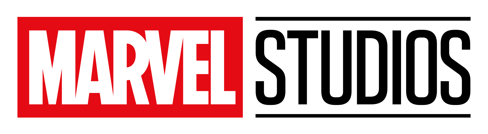

Avengers: Endgame (Vengadores: Endgame en España) es una película de superhéroes estadounidense de 2019 basada en el equipo de superhéroes Los Vengadores de Marvel Comics. Producida por Marvel Studios y distribuida por Walt Disney Studios Motion Pictures, es la secuela directa de Avengers: Infinity War (2018) y la película número 22 del Universo cinematográfico de Marvel (UCM), y hasta la fecha la más larga. Dirigida por Anthony y Joe Russo y escrita por Christopher Markus y Stephen McFeely, la película cuenta con un reparto coral que incluye a Robert Downey Jr., Chris Evans, Mark Ruffalo, Chris Hemsworth, Scarlett Johansson, Jeremy Renner, Don Cheadle, Paul Rudd, Brie Larson, Karen Gillan, Danai Gurira, Benedict Wong, Jon Favreau, Bradley Cooper, Gwyneth Paltrow y Josh Brolin. En la película, los miembros supervivientes de Los Vengadores y sus aliados intentan revertir el daño causado por Thanos en Infinity War.Después de que Thanos haya aniquilado a la mitad del universo, los Vengadores supervivientes deben hacer todo lo posible por deshacer tal atrocidad.
Has click aquí para ver el trailer oficial de Avengers End Game
Has click aqui para mirar Avengers End Game.
Durante un viaje de curación física y espiritual, un brillante neurocirujano se adentra en el mundo de las artes místicas.Doctor Strange (titulada Doctor Strange: Hechicero Supremo en Hispanoamérica) es una película de superhéroes estadounidense de 2016 basada en el personaje homónimo de Marvel Comics, producida por Marvel Studios y distribuida por Walt Disney Studios Motion Pictures. Es la decimocuarta película del Universo cinematográfico de Marvel (MCU). La película es dirigida por Scott Derrickson, que la escribió con Jon Spaihts y C. Robert Cargill, y es protagonizada por Benedict Cumberbatch como el personaje principal, junto a Chiwetel Ejiofor, Rachel McAdams, Benedict Wong, Michael Stuhlbarg, Benjamin Bratt, Scott Adkins, Mads Mikkelsen y Tilda Swinton. En Doctor Strange, el excirujano Stephen Strange aprende las artes místicas después de un accidente de automóvil que termina con su carrera.
Has click aquí para ver el trailer oficial de Dr. Strange.
Has click aqui para mirar Dr. Strange.
Un grupo de criminales intergalácticos debe unirse para detener a un guerrero fanático con planes para eliminar el universo.uardianes de la Galaxia (título original en inglés: Guardians of the Galaxy, retroactivamente llamada Guardianes de la Galaxia Vol. 1) es una película de superhéroes estadounidense de 2014 basada en el equipo de superhéroes homónimo de Marvel Comics, producida por Marvel Studios y distribuida por Walt Disney Studios Motion Pictures. Es la décima película del Universo cinematográfico de Marvel (MCU). La película es dirigida por James Gunn, que escribió el guion con Nicole Perlman, y cuenta con un reparto coral que incluye a Chris Pratt, Zoe Saldaña, Dave Bautista, Vin Diesel, Bradley Cooper, Lee Pace, Michael Rooker, Karen Gillan, Djimon Hounsou, John C. Reilly, Glenn Close y Benicio del Toro. En Guardianes de la Galaxia, Peter Quill forma una alianza incómoda con un grupo de delincuentes extraterrestres que intentan escapar después de robar un poderoso artefacto.
Has click aquí para ver el trailer oficial de Guardianes de la Galaxia.
Has click aqui para mirar Guardianes de la Galaxia.
Thor está cautivo en el planeta Sakaar, y debe embarcarse en una carrera contra reloj para volver a Asgard y detener Ragnarök, la destrucción del mundo, a manos de la despiadada villana Hela.Thor: Ragnarok es una película de superhéroes estadounidense de 2017 basada en el personaje de Marvel Comics Thor, producida por Marvel Studios y distribuida por Walt Disney Studios Motion Pictures. Es la secuela de Thor (2011) y Thor: The Dark World (2013), y la decimoséptima película en el Universo cinematográfico de Marvel (MCU). La película es dirigida por Taika Waititi a partir de un guion de Eric Pearson y los guionistas Craig Kyle y Christopher L. Yost, y es protagonizada por Chris Hemsworth, Tom Hiddleston, Cate Blanchett, Idris Elba, Jeff Goldblum, Tessa Thompson, Karl Urban, Mark Ruffalo y Anthony Hopkins. En Thor: Ragnarok, Thor debe escapar del planeta alienígena Sakaar a tiempo para salvar Asgard de Hela y prevenir el inminente Ragnarök.
Has click aquí para ver el trailer oficial de Thor Ragnarok.
Has click aqui para mirar Thor Ragnarok.
Peter Parker compagina su vida de estudiante ordinario de instituto en Queens con su alter ego de superhéroe, Spider-Man, y se encuentra tras la pista de una nueva amenaza que merodea por los cielos de Nueva York.Spider-Man: Homecoming (titulada Spider-Man: De regreso a casa en Hispanoamérica) es una película de superhéroes estadounidense de 2017 basada en el personaje de Marvel Comics Spider-Man, coproducida por Columbia Pictures y Marvel Studios, y distribuida por Sony Pictures Releasing. Es el segundo reinicio cinematográfico de Spider-Man y la decimosexta película del Universo cinematográfico de Marvel (MCU). La película es dirigida por Jon Watts, a partir de un guion de los equipos de Jonathan Goldstein y John Francis Daley, Watts y Christopher Ford, y Chris McKenna y Erik Sommers, y es protagonizada por Tom Holland como el personaje principal, junto a Michael Keaton, Jon Favreau, Laura Harrier, Zendaya, Donald Glover, Tyne Daly, Marisa Tomei y Robert Downey Jr. En Spider-Man: Homecoming, Peter Parker intenta equilibrar la vida escolar con ser Spider-Man, mientras enfrenta al Buitre.
Has click aquí para ver el trailer oficial de Spider-Man Homecoming.
Has click aqui para mirar Spider-Man Homecoming.

Mezcla el estilo tradicional de las sitcoms clásicas con el Universo Cinemático de Marvel. La Bruja Escarlata y Vision, dos seres superpoderosos con una vida familiar ideal, sospechan que no todo es como aparenta.WandaVision (conocida como Bruja Escarlata y Visión en España) es una miniserie de televisión estadounidense creada por Jac Schaeffer para el servicio de streaming Disney+. Está basada en los personajes Wanda Maximoff / Bruja Escarlata y Visión, propiedad de Marvel Comics, y se encuentra ambientada en el Universo cinematográfico de Marvel (UCM). Comparte continuidad con las películas de la franquicia, y tiene lugar después de los eventos de la película Avengers: Endgame (2019). WandaVision está producida por Marvel Studios, y cuenta con Schaeffer como escritora principal y Matt Shakman como director.
Has click aquí para ver el trailer oficial de Wanda Vision.
Has click aqui para mirar Wanda Vision.
El villano Loki retoma su papel de Dios del Engaño tras los acontecimientos de "Vengadores: Endgame".Loki es una serie de televisión estadounidense creada por Michael Waldron para la plataforma de streaming, Disney+, basada en el personaje de Marvel Comics. Es la tercera serie de televisión ambientada dentro del Universo cinematográfico de Marvel (MCU) producida por Marvel Studios, compartiendo continuidad con las películas de la franquicia. La serie tiene lugar después de los eventos de la película, Avengers: Endgame (2019), en la que una versión alternativa de Loki creó una nueva línea de tiempo. Waldron se desempeña como escritor principal, con Kate Herron dirigiendo la primera temporada.
Has click aquí para ver el trailer oficial de Loki.
Has click aqui para mirar Loki.

Explora momentos clave del Universo Cinemático de Marvel y conduce a la audiencia a territorios inexplorados.¿Qué pasaría si...? (What If...? en Inglés) es una serie de antología animada estadounidense creada por A.C. Bradley para el servicio de streaming Disney+, basada en la serie de Marvel Comics del mismo nombre. Es la cuarta serie de televisión del Universo cinematográfico de Marvel (MCU, por sus siglas en inglés) producida por Marvel Studios, y la primera serie animada del estudio. La serie explora líneas de tiempo alternativas en el multiverso que muestran lo que sucedería si los momentos importantes de las películas de MCU ocurrieran de manera diferente. Bradley se desempeña como escritor principal con la dirección de Bryan Andrews.
Has click aquí para ver el trailer oficial de What If...?
Has click aqui para mirar What If...?
Serie basada en el superhéroe de Marvel Comics Ojo de Halcón, centrada en las aventuras de la joven vengadora Kate M. Bishop, que asumió el papel después del vengador original, Clint Barton.Hawkeye es una miniserie de televisión estadounidense creada por Jonathan Igla para el servicio de streaming Disney+, basada en Marvel Comics con los personajes Clint Barton / Hawkeye y Kate Bishop / Hawkeye. Se trata de la quinta serie de televisión del Universo Cinematográfico de Marvel (MCU) producida por Marvel Studios, compartiendo continuidad con las películas de la franquicia y teniendo lugar tras los acontecimientos de la película Avengers: Endgame (2019). Igla se desempeñó como guionista principal con Rhys Thomas liderando el equipo de dirección.
Has click aquí para ver el trailer oficial de Hawkeye.
Has click aqui para mirar Hawkeye.
Tras los acontecimientos de "Vengadores: Endgame", Sam Wilson/Falcon y Bucky Barnes/Soldado de Invierno se unen en una aventura global que pone a prueba sus habilidades y su paciencia.The Falcon and the Winter Soldier es una miniserie de televisión estadounidense creada por Malcolm Spellman para el servicio de streaming Disney+, basada en Marvel Comics con los personajes Sam Wilson / Falcon y Bucky Barnes / Winter Soldier. Es la segunda serie de televisión del Universo Cinematográfico de Marvel (MCU) producida por Marvel Studios, compartiendo continuidad con las películas de la franquicia y teniendo lugar tras los acontecimientos de la película Avengers: Endgame (2019). Spellman se desempeñó como escritor principal con Kari Skogland dirigiendo.
Has click aquí para ver el trailer oficial de The Falcon and the Winter Soldier.
Has click aqui para mirar The Falcon and the Winter Soldier.